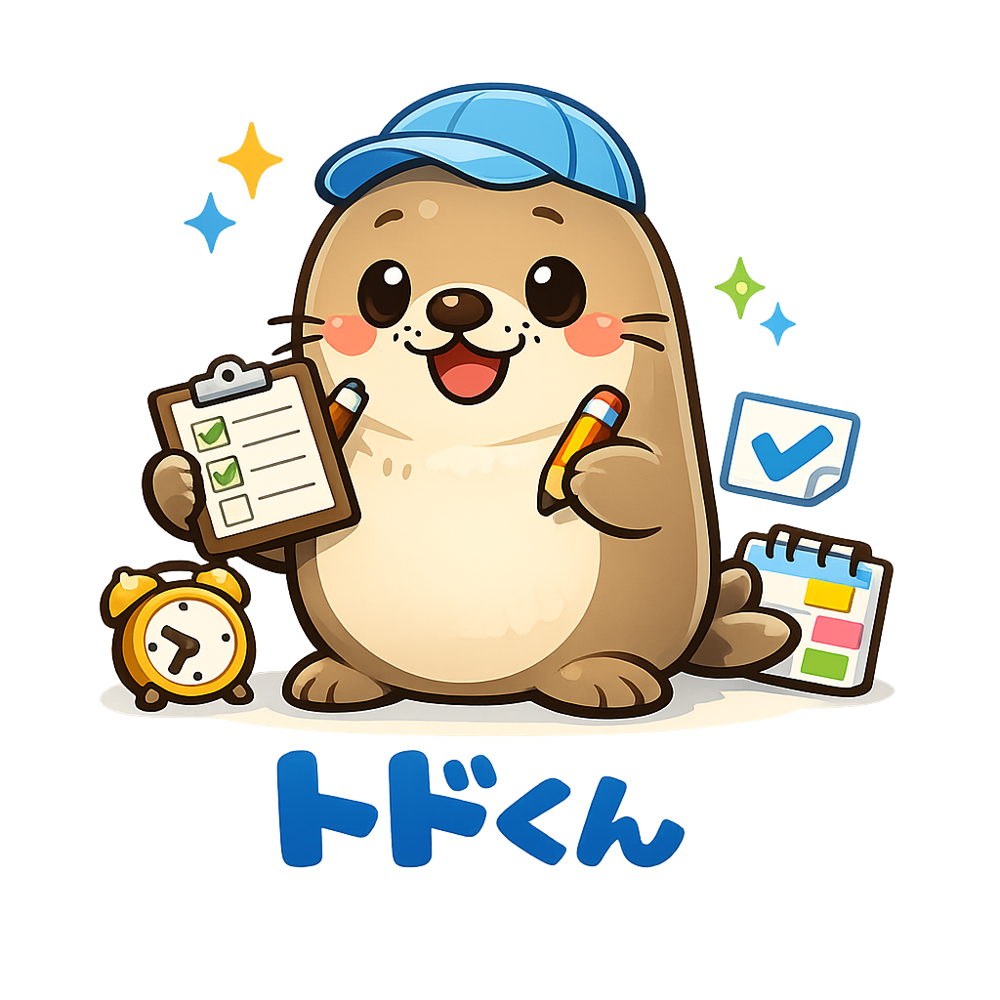

できること
- タスク登録と一覧管理
- Google カレンダー連携
- Google To Do 連携
- スマホでも使いやすい操作画面
トドくんは、ブラウザだけで使えるタスク管理アプリです。登録したタスクを Google カレンダーと Google To Do に連携しながら、パソコンでもスマホでも同じ感覚で使えるように準備を進めています。

このページは GitHub Pages の公開ページです。本体アプリはサーバー機能が必要なため、 Vercel で使える形に整えています。
GitHub Pages は紹介ページと案内用に使い、本体アプリは Vercel へ公開する構成で進めます。
本番運用に向けて、タスク保存先をデータベース化し、Vercel 上でそのまま使える形へ仕上げます。